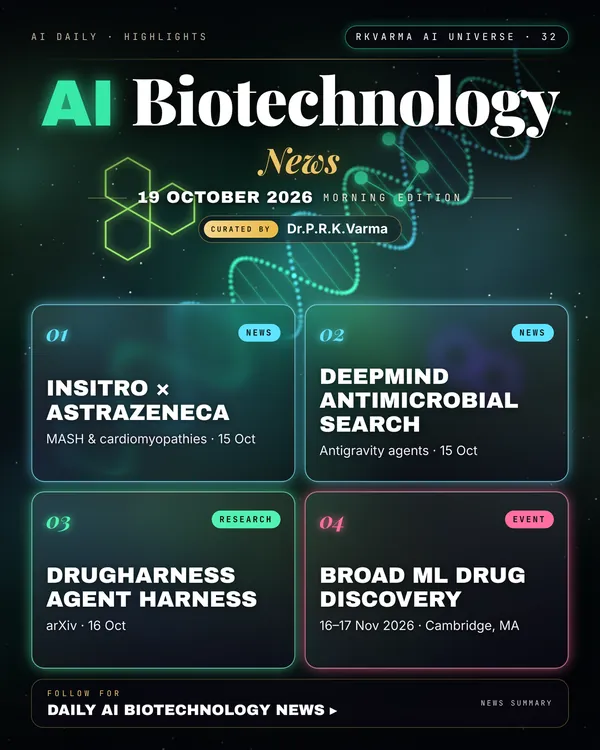

Latest updates · 19 October 2026
In the full issue →AI drug discovery signed new deals and found new molecules. insitro partnered with AstraZeneca, and Google DeepMind used agents to speed the search for antimicrobial peptides.
Research, industry & policy
- insitro and AstraZeneca collaborate, insitro · 15 Oct 2026: The Virtual Human causal AI platform will target MASH and cardiomyopathies.
- Google Antigravity speeds antimicrobial peptide search, Google DeepMind · 15 Oct 2026: Agentic tools speed up antimicrobial discovery.
- AI in drug discovery: October news watch, pharmaphorum · Oct 2026: A roundup of biopharma AI deals.
Journals & preprints
- DrugHarness: an evolvable agent harness, arXiv 2610.23791 · 16 Oct 2026: Composes scientific operations for computational drug discovery.
- GEMS: structure elucidation as learned search, arXiv 2610.23617 · 16 Oct 2026: Identifies small molecules from formulas and MS/MS spectra by searching isomer graphs.
Conferences, workshops & events
- ELRIG Protein Sciences in Drug Discovery, 10–11 Nov 2026 · Stevenage: Drug discovery science.
- Broad ML in Drug Discovery Symposium, 16–17 Nov 2026 · Cambridge, MA: Machine learning for drug discovery.
- PEGS Europe: Machine Learning, 16–19 Nov 2026: Protein engineering with machine learning.
Why it matters
Causal AI platforms are now attracting large pharma partnerships for cardiometabolic disease.

